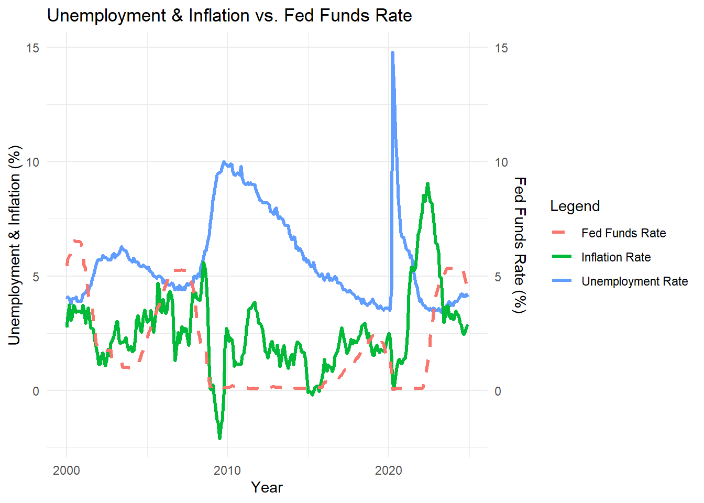
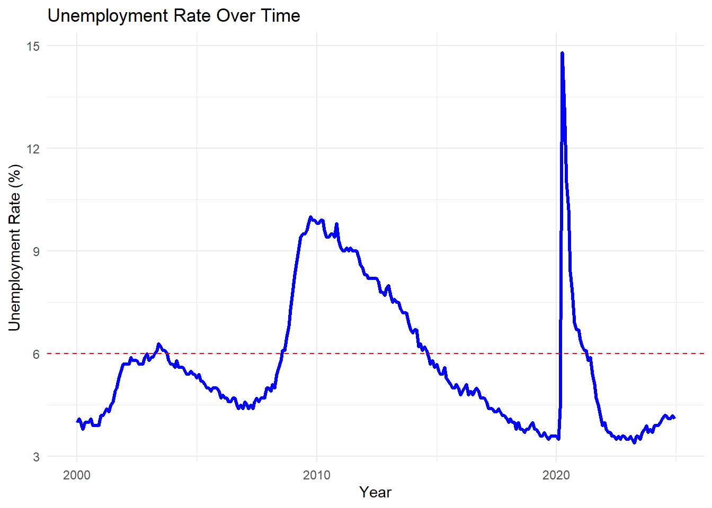
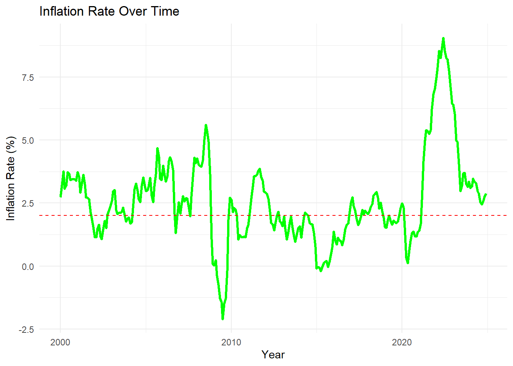
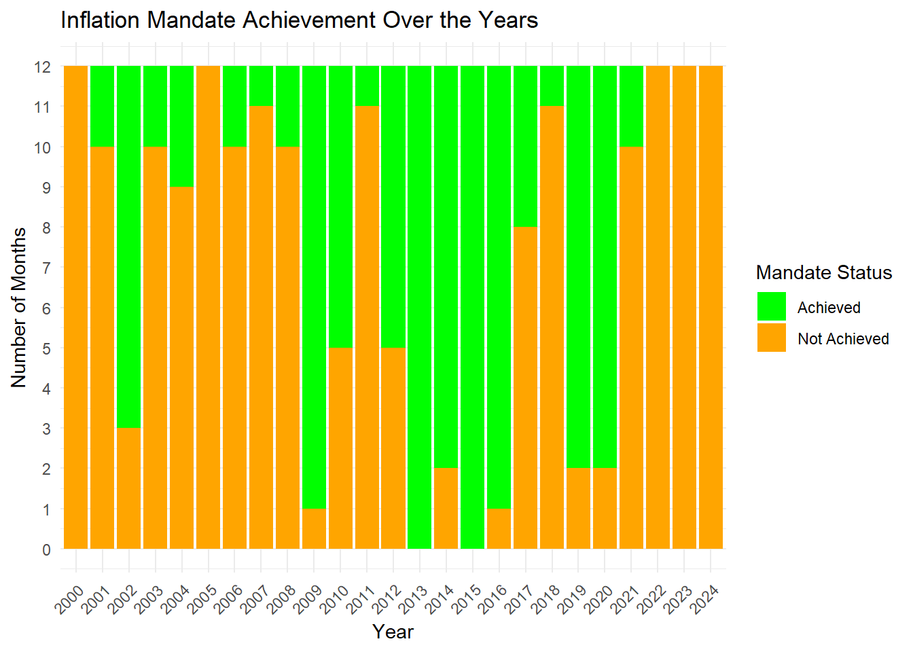
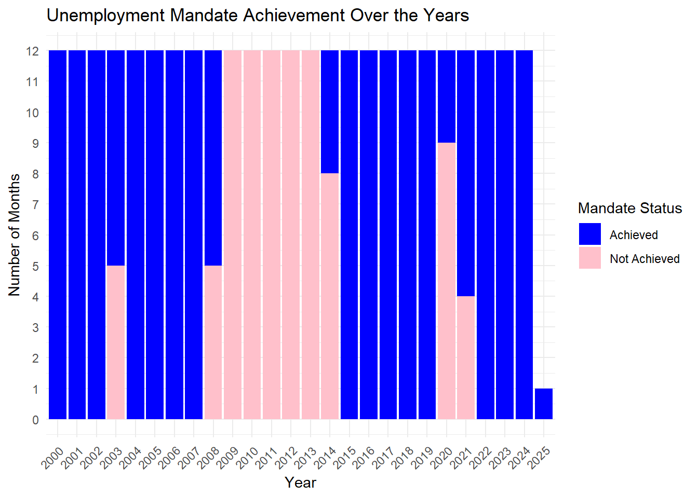
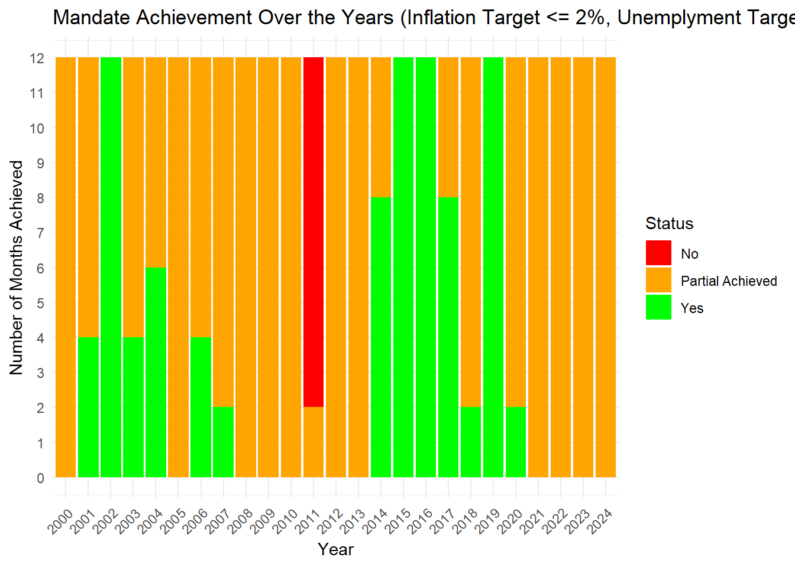

Attaching package: 'stringdist'
The following object is masked from 'package:tidyr':
extract
library(broom)library(gridExtra)
Attaching package: 'gridExtra'
The following object is masked from 'package:dplyr':
combine
library(gclus)
Loading required package: cluster
library(car)
Loading required package: carData
Attaching package: 'car'
The following object is masked from 'package:dplyr':
recode
The following object is masked from 'package:purrr':
some
library(VGAM)
Loading required package: stats4
Loading required package: splines
Attaching package: 'VGAM'
The following object is masked from 'package:car':
logit
library(MASS)
Attaching package: 'MASS'
The following object is masked from 'package:dplyr':
select
Attaching package: 'timeDate'
The following objects are masked from 'package:e1071':
kurtosis, skewness
library(caret)
Loading required package: lattice
Attaching package: 'caret'
The following object is masked from 'package:VGAM':
predictors
The following object is masked from 'package:purrr':
lift
library(GGally)
Registered S3 method overwritten by 'GGally':
method from
+.gg ggplot2
Attaching package: 'GGally'
The following object is masked from 'package:fma':
pigs
Attaching package: 'reshape2'
The following object is masked from 'package:tidyr':
smiths
library(mixtools)
mixtools package, version 2.0.0, Released 2022-12-04
This package is based upon work supported by the National Science Foundation under Grant No. SES-0518772 and the Chan Zuckerberg Initiative: Essential Open Source Software for Science (Grant No. 2020-255193).
Attaching package: 'mixtools'
The following object is masked from 'package:car':
ellipse
Convert from wide format to long format using reshape()
cpi_long <-reshape(cpi_df, varying =list(2:ncol(cpi_df)), # All columns except "Year"v.names ="CPI", # New column name for CPI valuestimevar ="Month", # New column for Month namestimes =names(cpi_df)[2:ncol(cpi_df)], # Month names from column namesidvar ="Year", # Keep Year column as identifierdirection ="long")#cpi_long
Saving as CSV
# Define the file path with filename and extension#file_path <- "C:/Users/Uzma/Downloads/new_df.csv"file_path <-"C:/Users/Uzma/CUNY-SPS-Assignments/Data_608/output_csv/processed_interest_rates.csv"# Write dataframe to CSVwrite.csv(cpi_long, file = file_path, row.names =FALSE)# Confirm that the file was savedprint("File saved successfully!")
[1] "File saved successfully!"
#cpi_long
Calculate percentage change and round to 2 decimal places
cpi_df <- cpi_long %>%group_by(Month) %>%# Group by month to ensure comparisons are within the same monthmutate(`inflation_rate`=round(((CPI -lag(CPI)) /lag(CPI)) *100, 2)) %>%ungroup()#cpi_df
Create a new column ‘Status’ based on ‘inflation_rate’
cpi_df <- cpi_df %>%filter(Year !=1999) # Keep only rows where Year is NOT 1999#cpi_df
Saving as CSV
# Define the file path with filename and extension#file_path <- "C:/Users/Uzma/Downloads/new_df.csv"file_path <-"C:/Users/Uzma/CUNY-SPS-Assignments/Data_608/output_csv/inflation_rates.csv"# Write dataframe to CSVwrite.csv(cpi_df, file = file_path, row.names =FALSE)# Confirm that the file was savedprint("File saved successfully!")
[1] "File saved successfully!"
#cpi_df
Preparing FED Dataset
#fed_data
Convert “observation_date” to a Date format
fed_data <- fed_data %>%mutate(observation_date =mdy(observation_date)) # Converts MM/DD/YYYY format to Date typefed_df <- fed_data#fed_df
# Define the file path with filename and extension#file_path <- "C:/Users/Uzma/Downloads/new_df.csv"file_path <-"C:/Users/Uzma/CUNY-SPS-Assignments/Data_608/output_csv/fed_rates.csv"# Write dataframe to CSVwrite.csv(fed_df, file = file_path, row.names =FALSE)# Confirm that the file was saved#print("File saved successfully!")
Creating Dataframe for Unemployment Rate dataset
unemp_df <- unemployment_data#unemp_df
Extract the Month from the Label column
unemp_df <- unemp_df %>%mutate(Month =word(Label, 2)) # Extract the second word (month name) from "1999 Jan"#unemp_df
# Define the file path with filename and extension#file_path <- "C:/Users/Uzma/Downloads/new_df.csv"file_path <-"C:/Users/Uzma/CUNY-SPS-Assignments/Data_608/output_csv/unemp_rates.csv"# Write dataframe to CSVwrite.csv(unemp_df, file = file_path, row.names =FALSE)# Confirm that the file was saved#print("File saved successfully!")
Visualizing FED’s Mandate Fulfillment
The Federal Reserve (FED) has a dual mandate from Congress:
Stable Prices (Low Inflation) → Inflation rate around 2%
Maximum Employment (Low Unemployment) → Low unemployment (~5% or lower)
# Define the file path with filename and extension#file_path <- "C:/Users/Uzma/Downloads/new_df.csv"file_path <-"C:/Users/Uzma/CUNY-SPS-Assignments/Data_608/output_csv/merged_data.csv"# Write dataframe to CSV#write.csv(merged_df, file = file_path, row.names = FALSE)# Confirm that the file was saved#print("File saved successfully!")
Visualization: Has the FED Fulfilled its Mandate?
Unemployment, Inflation & Fed Funds Rate Trend
This line chart shows how the unemployment rate, inflation rate, and Fed Funds rate have changed over time.
# Create a combined plot with dual y-axesggplot(merged_df, aes(x =as.Date(paste(Year, Month, "1", sep ="-"), "%Y-%b-%d"))) +geom_line(aes(y = unemployment_rate, color ="Unemployment Rate"), size =1.2) +geom_line(aes(y = inflation_rate, color ="Inflation Rate"), size =1.2) +geom_line(aes(y = fed_fund_rate, color ="Fed Funds Rate"), size =1.2, linetype ="dashed") +scale_y_continuous(sec.axis =sec_axis(~., name ="Fed Funds Rate (%)")) +labs(title ="Unemployment & Inflation vs. Fed Funds Rate",x ="Year", y ="Unemployment & Inflation (%)",color ="Legend") +theme_minimal()
Warning: Using `size` aesthetic for lines was deprecated in ggplot2 3.4.0.
ℹ Please use `linewidth` instead.

The Federal Reserve System has been given a dual mandate of pursuing the economic goals of maximum employment and price stability with a inflation rate of 2% over time and unemployment rate between 4% and 6% over time
“Has the FED been able to fulfill the mandate given to it by Congress?”
Unemployment Rate Over Time
ggplot(merged_df, aes(x =as.Date(paste(Year, Month, "1", sep ="-"), "%Y-%b-%d"), y = unemployment_rate)) +geom_line(color ="blue", size =1.2) +geom_hline(yintercept =6, linetype ="dashed", color ="red") +labs(title ="Unemployment Rate Over Time",x ="Year", y ="Unemployment Rate (%)") +theme_minimal()

Interpretation:
A dashed red line at 6% shows the employment mandate If unemployment is below 6%, Fed is meeting its employment goal
Inflation Rate Over Time
ggplot(merged_df, aes(x =as.Date(paste(Year, Month, "1", sep ="-"), "%Y-%b-%d"), y = inflation_rate)) +geom_line(color ="green", size =1.2) +geom_hline(yintercept =2, linetype ="dashed", color ="red") +labs(title ="Inflation Rate Over Time",x ="Year", y ="Inflation Rate (%)") +theme_minimal()

Interpretation:
A dashed red line at 2% shows the price stability mandate If inflation stays near 2%, Fed is achieving price stability
To evaluate whether the Federal Reserve (FED) has met its unemployment mandate, we need to visualize unemployment trends over time and compare them with the “Achieved” vs. “Not Achieved” status.
# Convert Month to numeric and create Date columnunemp_df <- unemp_df %>%mutate(Month =match(Month, month.abb), # Convert "Jan" -> 1, "Feb" -> 2Date =as.Date(paste(Year, Month, "1", sep ="-"), format ="%Y-%m-%d"),unemployment_rate =as.numeric(unemployment_rate) # Ensure numeric )
ggplot(cpi_df, aes(x =factor(Year), fill = inflation_criteria)) +geom_bar(position ="stack") +scale_fill_manual(values =c("Achieved"="green", "Not Achieved"="orange")) +scale_y_continuous(breaks =seq(0, 12, by =1)) +# Force whole numbers for monthslabs(title ="Inflation Mandate Achievement Over the Years",x ="Year",y ="Number of Months",fill ="Mandate Status") +theme_minimal() +theme(axis.text.x =element_text(angle =45, hjust =1)) # Rotate x-axis labels for readability

ggplot(unemp_df, aes(x =factor(Year), fill = unemp_criteria)) +geom_bar(position ="stack") +scale_fill_manual(values =c("Achieved"="blue", "Not Achieved"="pink")) +scale_y_continuous(breaks =seq(0, 12, by =1)) +# Ensure y-axis is in whole numbers (0 to 12)labs(title ="Unemployment Mandate Achievement Over the Years",x ="Year",y ="Number of Months",fill ="Mandate Status") +theme_minimal() +theme(axis.text.x =element_text(angle =45, hjust =1)) # Rotate x-axis labels

Ensure merged_df is Properly Structured
# Load necessary librarieslibrary(dplyr)library(ggplot2)library(tidyr)# Ensure the Month column is a character typemerged_df <- merged_df %>%mutate(Month =as.character(Month))# Convert to long format for better visualizationlong_df <- merged_df %>%pivot_longer(cols =c(inflation_criteria, unemp_criteria),names_to ="Mandate",values_to ="Status")# Rename "Mandate" column for claritylong_df <- long_df %>%mutate(Mandate =ifelse(Mandate =="inflation_criteria", "Inflation Mandate", "Unemployment Mandate"))
Create the Stacked Bar Chart
Now visualizing combined Inflation & Unemployment Mandate Achievements over the years.
library(dplyr)library(ggplot2)# Ensure Year is numericlong_df$Year <-as.numeric(long_df$Year)# Count unique months per year (avoid double-counting Inflation & Unemployment)aggregated_df <- long_df %>%group_by(Year, Month, status) %>%summarise(count =n(), .groups ="drop") # Count unique months per year# Define custom colorscolors <-c("Yes"="green","No"="red","Partial Achieved"="orange")# Create the stacked bar chartggplot(aggregated_df, aes(x =factor(Year), y = count, fill = status)) +geom_col(position ="stack") +# Use geom_col for pre-aggregated datascale_fill_manual(values = colors) +scale_y_continuous(limits =c(0, 12), breaks =0:12) +# Ensure Y-axis is 0-12 monthslabs(title ="Mandate Achievement Over the Years (Inflation Target <= 2%, Unemplyment Target <= 6%)",x ="Year",y ="Number of Months Achieved",fill ="Status") +theme_minimal() +theme(axis.text.x =element_text(angle =45, hjust =1)) # Rotate x-axis labels for readability
Warning: Removed 150 rows containing missing values or values outside the scale range
(`geom_col()`).

Interpreting the Chart: Has the Federal Reserve (FED) Fulfilled Its Mandate?
The stacked bar chart represents the FED’s mandate achievement over time (2000–2024), tracking whether it met its dual mandate of:
Stable Prices (Inflation Control) Maximum Employment The chart categorizes each month per year into:
Yes – Both inflation & employment criteria were achieved. No – Neither was achieved. Partial Achieved – One was achieved, the other was not.